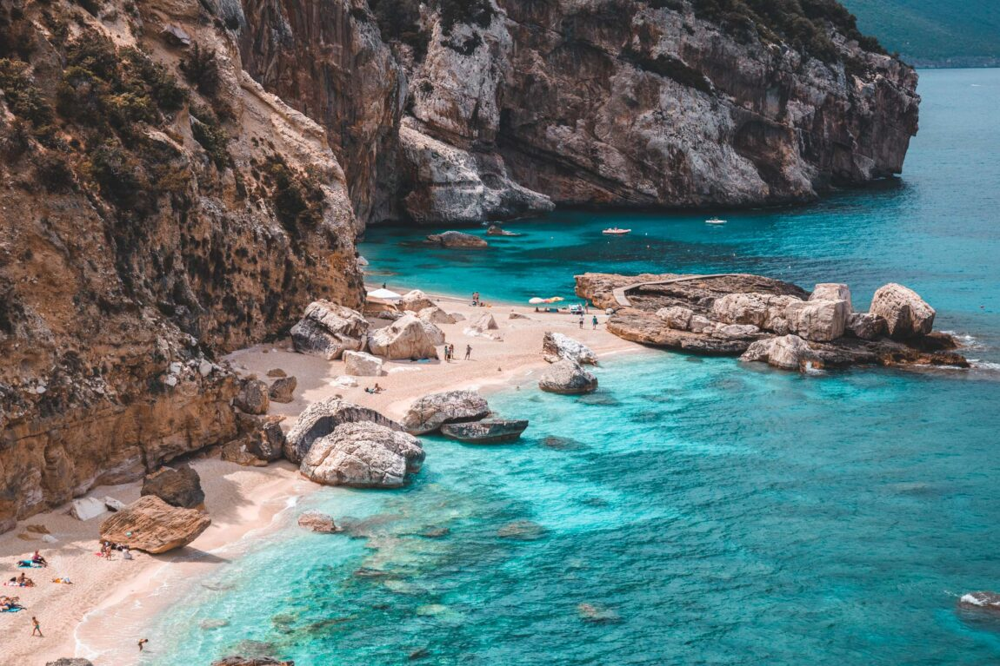

Destinos
Riviera Francesa

Imagine-se navegando por um litoral que combina charme, sofisticação e beleza natural. A Riviera Francesa encanta com suas vilas pitorescas, águas azul-turquesa e iates luxuosos que desenham o horizonte. Um destino perfeito para quem busca glamour, gastronomia refinada e paisagens cinematográficas.
Sardenha, Itália
Cenários de tirar o fôlego e praias de águas cristalinas definem a Sardenha. Suas falésias imponentes, enseadas escondidas e areias claras fazem deste paraíso italiano um convite ao relaxamento e à aventura. Ideal para quem busca contato com a natureza e experiências autênticas no Mediterrâneo.
Palaiokastritsa, Grécia

Palaiokastritsa é um pedaço do paraíso na Ilha de Corfu. Cercada por montanhas verdes e praias de águas transparentes, a região exala tranquilidade e beleza. Suas enseadas escondidas são perfeitas para passeios de barco, mergulho e para se encantar com os tons mágicos do Mar Jônico.
Ibiza, Espanha
Muito além das famosas festas, Ibiza encanta por suas águas cristalinas, enseadas paradisíacas e pôr do sol inesquecível. Uma mistura perfeita de natureza, cultura e diversão, onde você pode aproveitar desde refúgios tranquilos até experiências vibrantes em meio a paisagens deslumbrantes.
Maldivas

Um refúgio no meio do Oceano Índico. As Maldivas impressionam com seus bangalôs sobre águas azul-turquesa, recifes de corais vibrantes e uma atmosfera que traduz exclusividade e romance. Perfeito para quem busca luxo, tranquilidade e experiências inesquecíveis.
Bahamas, Atlântico Norte
Cores que parecem irreais e ilhas que parecem flutuar no meio do oceano. As Bahamas são sinônimo de praias de areia branca, mar cristalino e paisagens que combinam natureza exuberante com conforto. Um destino dos sonhos para quem ama navegar e explorar.

Ko Nang Yuan, Tailândia

Um arquipélago encantador e exótico, onde três ilhas estão conectadas por bancos de areia branquíssima. Ko Nang Yuan surpreende com suas águas azul-esmeralda, perfeitas para mergulhos e snorkeling, além de mirantes que oferecem vistas simplesmente espetaculares.
Nusa Penida, Indonésia
Nusa Penida é um espetáculo da natureza. Suas falésias majestosas, praias escondidas e o mar azul intenso formam cenários que parecem saídos de um cartão-postal. É o lugar perfeito para quem busca aventura, paisagens selvagens e momentos inesquecíveis no coração da Indonésia.